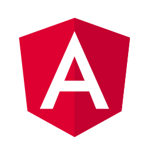

<div  class="container-fluid ">
   <div class="row toolbar-style">
   <div class="col-sm " >
 <a routerLink="/" class="navbar-brand">
    <i class="fa fa-github" height="32" width="32" aria-hidden="true"> Explorer Clone </i>
    </a>
   
   </div>
   <div class="col-sm">
 <!-- <repo-search-box></repo-search-box> -->
   </div>
    <div class="col-sm some-padding">
   <a href="https://angular.io/" target="_blank">
  	<span> Created using </span> 
    
   </a>
    <a href="https://www.typescriptlang.org/" target="_blank" >
     Typescript
  </a>
  </div>
  </div>

<div class="container some-padding">  
<router-outlet></router-outlet>
</div>

</div>